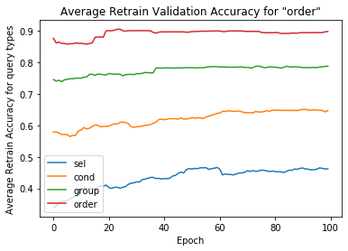
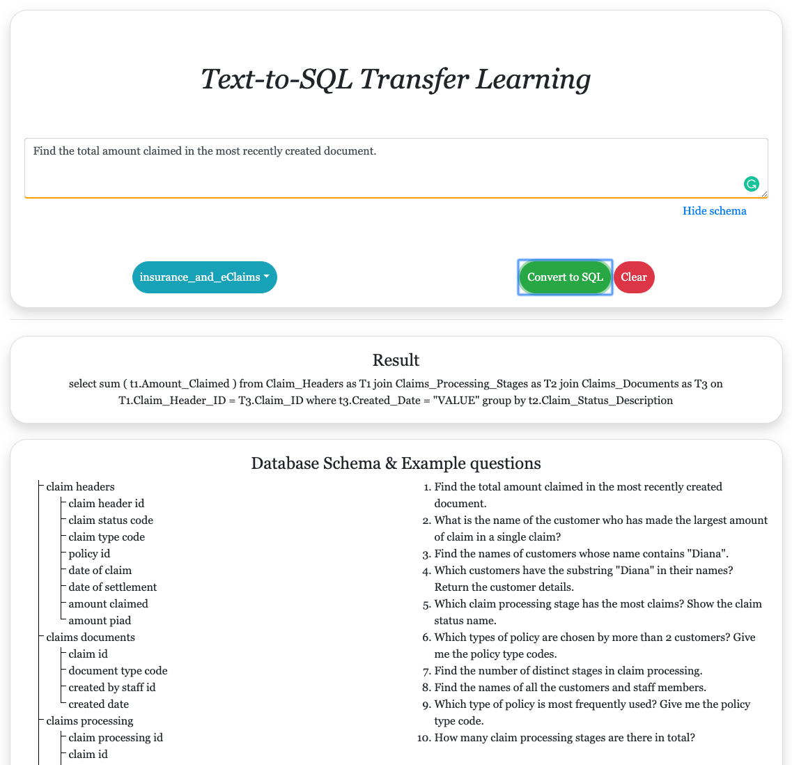

An Analysis of Transfer Learning for Text-to-SQL
The text-to-SQL task falls under the semantic-parsing framework, a framework where natural language is converted to some logical form, like a symbolic logic, computer code, or in this case,SQL queries. Early approaches to the text-to-SQL task, and more broadly semantic-parsing,used techniques like pattern-matching and other methods that would now be categorized as ”ex-pert systems” approaches. Later approaches to semantic parsing used more sophisticated, of-ten probabilistic methods, for example learning the parameters of a grammar or probabilistic mode. Recently, Neural methods have dominated the space, achieving state-of-the-art performance on many semantic-parsing tasks. For the text-to-SQL task, recursive neural network and sequence-to-sequence architectures have achieved state-of-the-art performance, overtaking previous methods by a wide margin
Transfer learning is a machine learning method that’s used in situations with limited data. The idea is to transfer knowledge from one domain to another by training a model on a large dataset, and then ”fine-tuning”the model on a target dataset, which is typically much smaller or more expensive to obtain.In many practical settings fine-tuning is crucial,specifically when the target dataset is not large enough to train a high-quality model, but a large and related dataset is available. In this work we’ll aim to answer questions like ”does transfer learn-ing work for text-to-SQL?”, ”will transfer learning work for this specific dataset?”, ”how many training points do I need?”, and ”how can I use transfer learning for text-to-SQL?”
This was a final project for COMPSCI585 Natural Language Processing class at UMass Amherst. I worked with a group of four other students on this project. The code is available here.
Dataset
We used the Spider dataset for this project. Spider is a large scale, cross-domain semantic parsing and text-to-sql dataset consisting of 9,685 unique data points that consists of English questions, associated SQL query from respective domains, and a break down of the SQL query over specific SQL clauses. The SQL queries are constructed from 166 databases covering 138 domains. An example of a datapoint in our dataset is shown to the right. The model expects an English query tokenized, thus, for on-the-fly evaluation, an English query is split into separated tokens by white spaces
In the beginning step of the project, I implemented on the datasplitter that lets us combine all data together and make necessary splits based on the type of data that we are trying to split. Datasplitter.py defines a DataSplitter class that creates a new folder and merges the trainothers.json and trainspider.json files into one combined list of all datapoints. The DataSplitter class takes an input of the database that should be left out from the all of the training examples, thus all of the training examples are made up of data from 165 databases, while all examples from specified database are saved for retrain-ing and testing. DataSplitter then writes the newly split data into respective files in the newly created folder. The reason that we created a new folder for the data split is to prohibit any alterations to the original dataset.

Model
The SQLNet model uses what is called a sketch to construct SQL queries. Sketch based approaches are popular among text-to-SQL models and, more generally, semantic parsing tasks. One reason to use sketches is to solve the so-called ”ordering issue”. Sketches impose a canonical structure on the output, whose dependencies allows us to intelligently populate the sketch. Syntax of a sketch is illustrated below.
Sketches were originally developed to tackle problems on the WikiSQL dataset. For the Spider dataset, the SELECT and WHERE modules are extended to ORDER BY and GROUP BY components. It should be noted that these sketches are not exhaustive; there are still queries that cannot be expressed. However this limitation is due to alack of sketches; more sketches can be created to address this.
SQLNet, as mentioned earlier, avoids the ordering issue altogether by introducing a sequence to set model that can predict on an unordered set of constraints. In addition, the model employs asketch based approach that allows it avoid grammatical errors. The changes introduced in this model reflect in its performance. Of all the base-lines tested on the SPIDER dataset, the SQLNet model outperformed every other model.
With the combination of a different training procedure, and type extraction using a knowledge graph, the TypeSQL model is supposed to im-proved upon the SQLNet model but the performance of both the models are largely similar with the edge going to the SQLNet model. For that rea-son, SQLNet was chosen as the baseline to learn the effects of transfer learning.
Methodology
- Pick a database that will be used for transfer learning (t)
- Train the SQLNet model on the remaining (n-1) datasets
- Split selected dataset (t) into retrain and test set
- Retrain on t's retrain set and evaluate using t's test set using component matching
After combining all of the data together, we have about 9.5K data points spanning 166 (n) databases.
Component matching: The average exact match between components of the predicted and actual SQL queries.
Results
The baseline SQLNet model achieved .11 accuracy on the SPIDER dataset
With fine tuning (weighted avg) on leave one out dataset, we were able to achieve .22 accuracy, the huge jump in accuracy is attributed to similarity between queries in the leave one out method. In this case, we are over-fitting to the data, which might be a correct approach for certain applications.
Below image shows the average for leave one out dataset validation for each component in the SQL queries. In the image below, order clause has higher accuracy than select clause.
We built a web interface that allows users to interact with the pre-trained models in real-time. Additionally, users are able to see example questions for respective database while also learning about the schema of the database.
We are using Python Flask to implement a simple server that accepts string input, evaluates the model by feeding the input through a forward pass in the network and then returns the output.
The front-end is built HTML, CSS, and JavaScript and incorporates frameworks like boot-strap, jQuery and popper. When users select a different database in the dropdown, Flask reloads the models and loads respective files. On average, a model reload takes under 0.1 seconds while evaluation completes under 0.5 seconds
Contribution
- Part of idea discussions and architecture design
- Built data processing scripts to merge and split data for transfer learning (datasplitter.py)
- Built web application that interfaces with saved models from training (including front-end and back-end)
The work of training models, implementation and others was split amongst the 5 team members.
My contributions were: